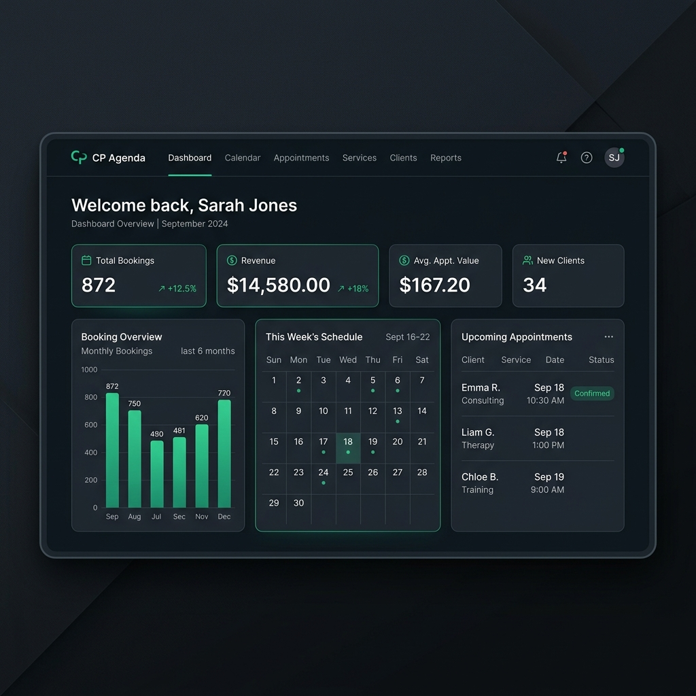
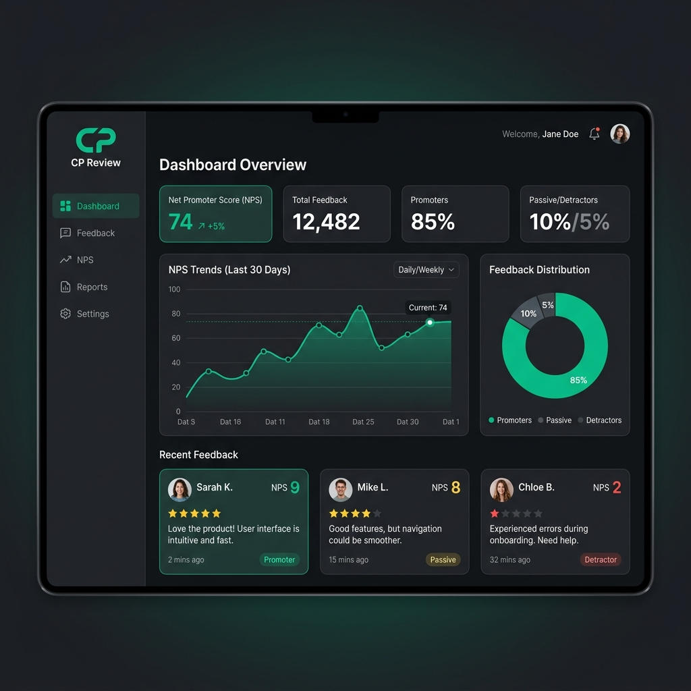
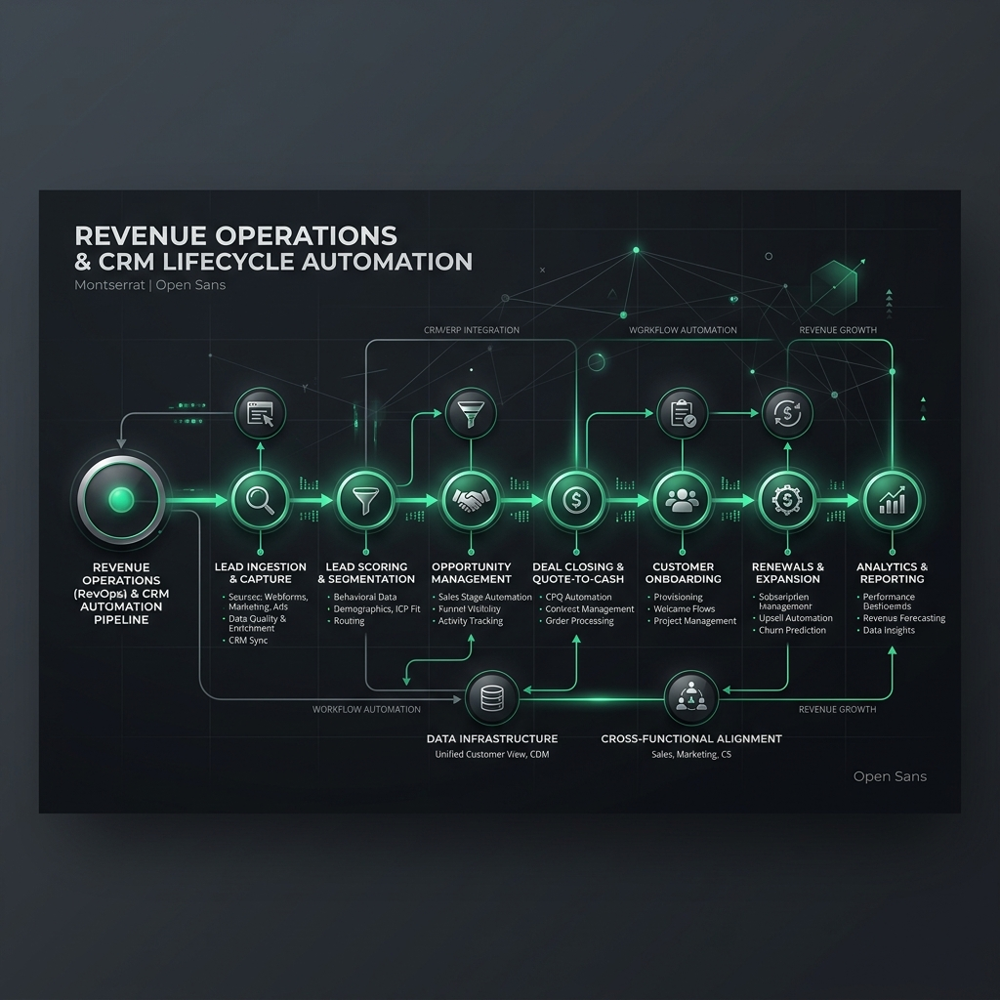

01 CP AGENDA
CRM, Aquisição & Vendas

Plataforma SaaS de agendamento de serviços, integrada nativamente ao HubSpot CRM para gerenciar o pipeline de entrada e a conversão de leads comerciais.
Sou fundadora e CEO da Creative Print, uma empresa baseada no Japão que une fabricação digital 3D/NFC e soluções tecnológicas SaaS. Atuo na interseção entre engenharia de software e processos de negócios, desenhando arquiteturas de CRM e fluxos de automação que transformam dados em receita previsível e escalável.
Uma seleção de soluções desenvolvidas para centralizar e automatizar a operação comercial da Creative Print no HubSpot CRM.
Ver repositório do projetoCRM, Aquisição & Vendas

Plataforma SaaS de agendamento de serviços, integrada nativamente ao HubSpot CRM para gerenciar o pipeline de entrada e a conversão de leads comerciais.
Customer Success & Retenção

Ferramenta SaaS de feedbacks e NPS. Monitora a satisfação pós-venda dos clientes, retroalimentando o CRM com dados de saúde da conta (Health Score).
Arquitetura de Dados & CRM

Laboratório prático de RevOps mapeando dados, ciclo de vida do cliente e integrações via Make.com para marketing, vendas e customer success.
Minhas competências estão centradas em criar consistência técnica e operacional entre desenvolvimento de software e objetivos de receita.
"Revenue Operations não é sobre consertar um time isolado. É sobre alinhar e orquestrar toda a jornada do cliente para gerar crescimento previsível."